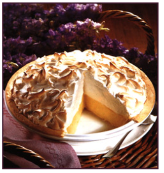

This is a very fun recipe to follow, because Grandma makes it sweet and simple. This pie is thickened with cornstarch and flour in addition to egg yolks, and contains no milk.
— Emilie S.
Q: What do you call an ape who loves pie?
A: A meringue-utan.
— Vickie K.